Logo & brand identity
META
Overview
Technology, made clear and human.
META is an information technology company that builds digital transformation solutions — from web programming and mobile applications to graphic design, artificial intelligence and hardware integration. The brand needed to look precise and capable, yet open and friendly enough to explain complex services to any client.
- Logo concept01
- Colour & typography02
- Illustrations03
- Website04
- Brand applications05
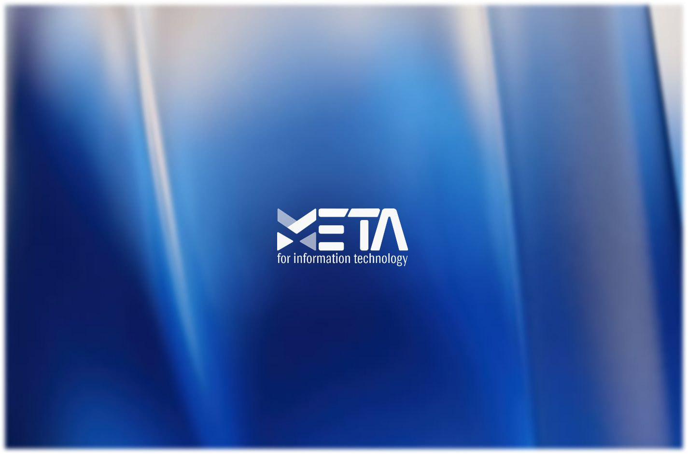
The Concept
Two sources shaped the logo: Morse code and the building blocks of the web. Short and long bars, like dots and dashes, form the letters, while the arrow-like M echoes the angle brackets of code.
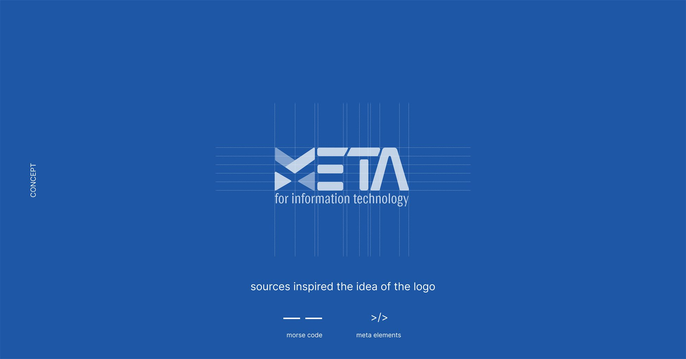
Morse code
Bars of different lengths spell out the E and the T, turning the wordmark into a signal — a quiet reference to communication, the heart of any IT company.
Code elements
The M is built from two chevrons that recall the < /> tags every web page is made of, giving the mark a clear sense of direction and progress.
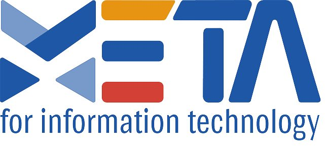
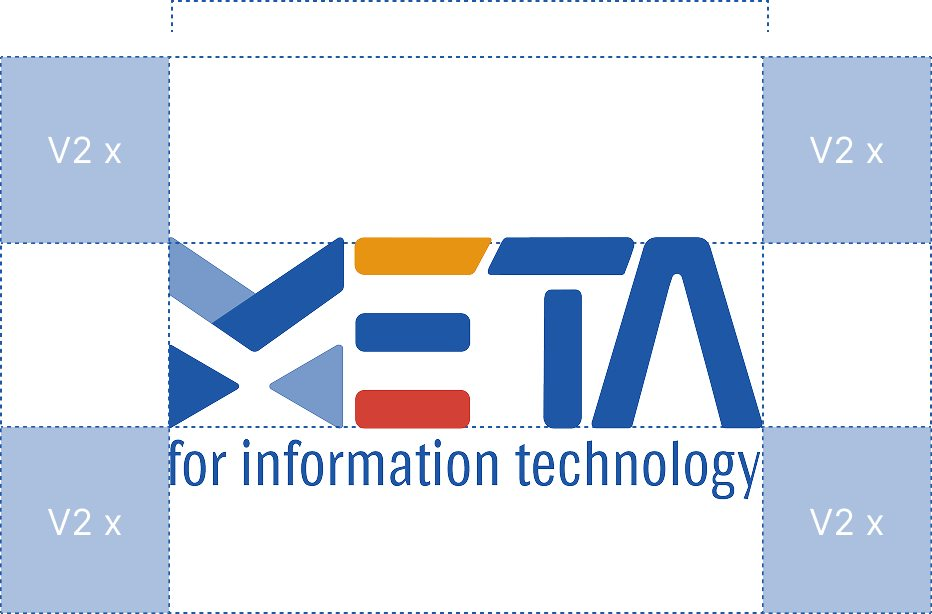
Colour & Type
A dependable blue carries the brand, with orange and red as sharp signal colours taken straight from the logo. A warm yellow softens the system for illustrations and presentations.
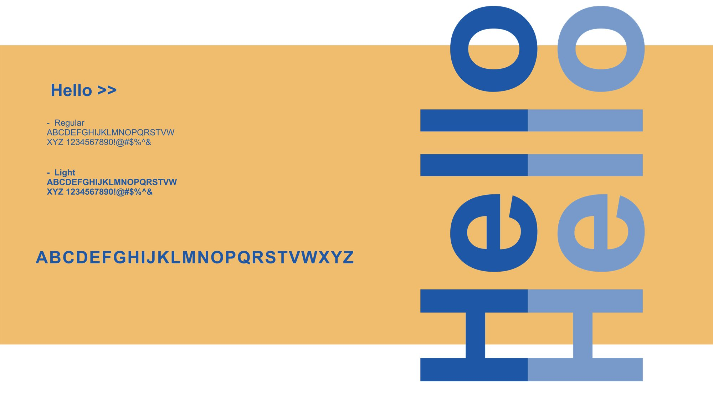
Illustrations
Loose ink lines and flat fills in the brand blue and warm yellow make technical services feel human and approachable — people at work, charts that come alive, ideas that click into place.
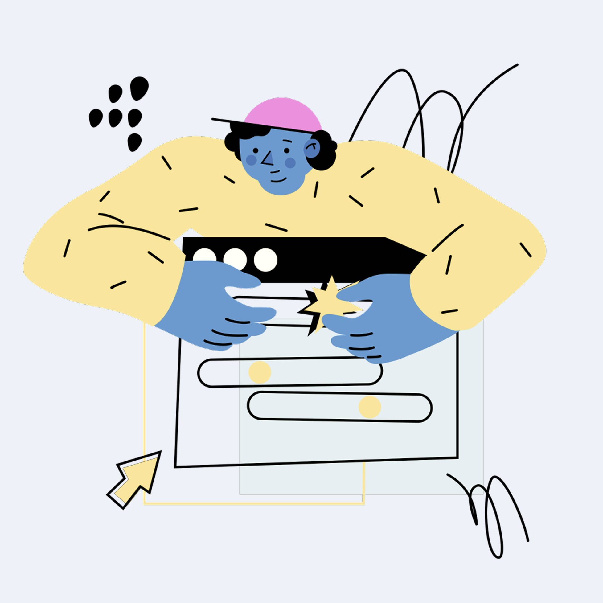
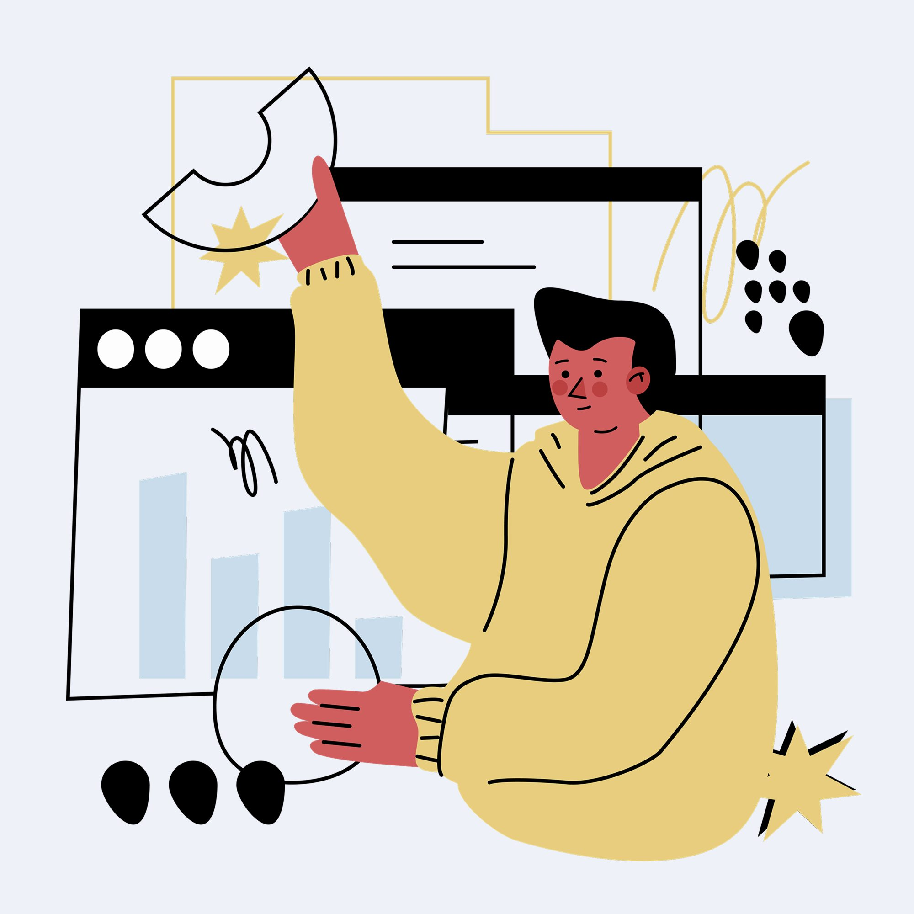
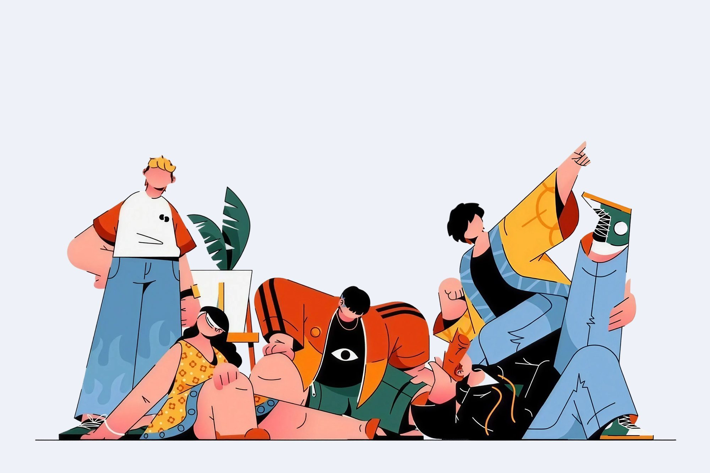
Website
The website carries the identity online: a clean white layout, generous space and the brand blue for every call to action, introducing META’s services with a single, confident message.
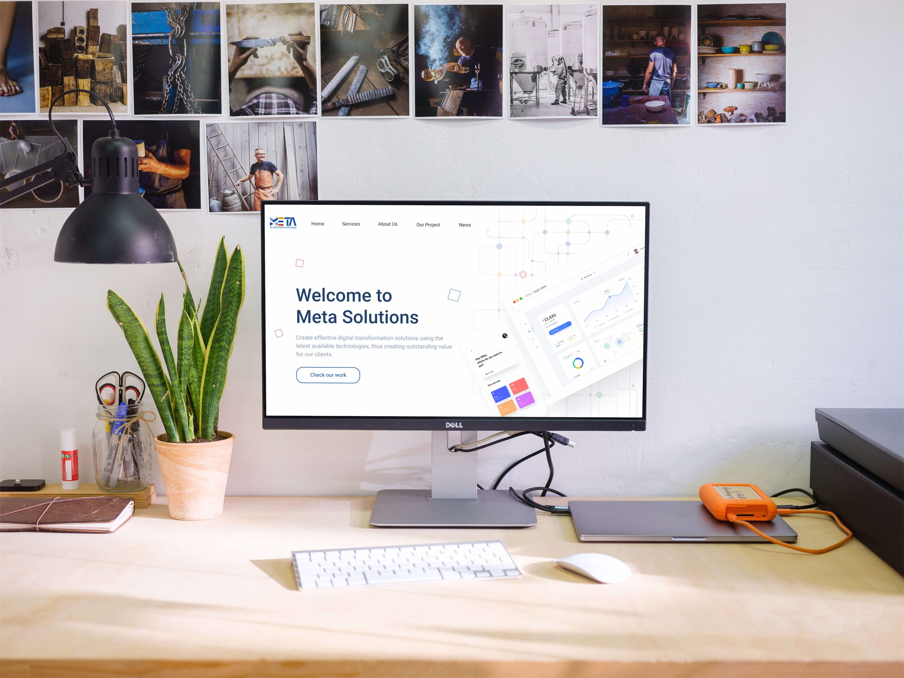
Every signal, clearly sent.
Applications
On paper and in the office, the identity stays crisp and consistent: angled colour corners on the stationery echo the chevrons of the logo, while the mugs bring the brand blue into everyday work.
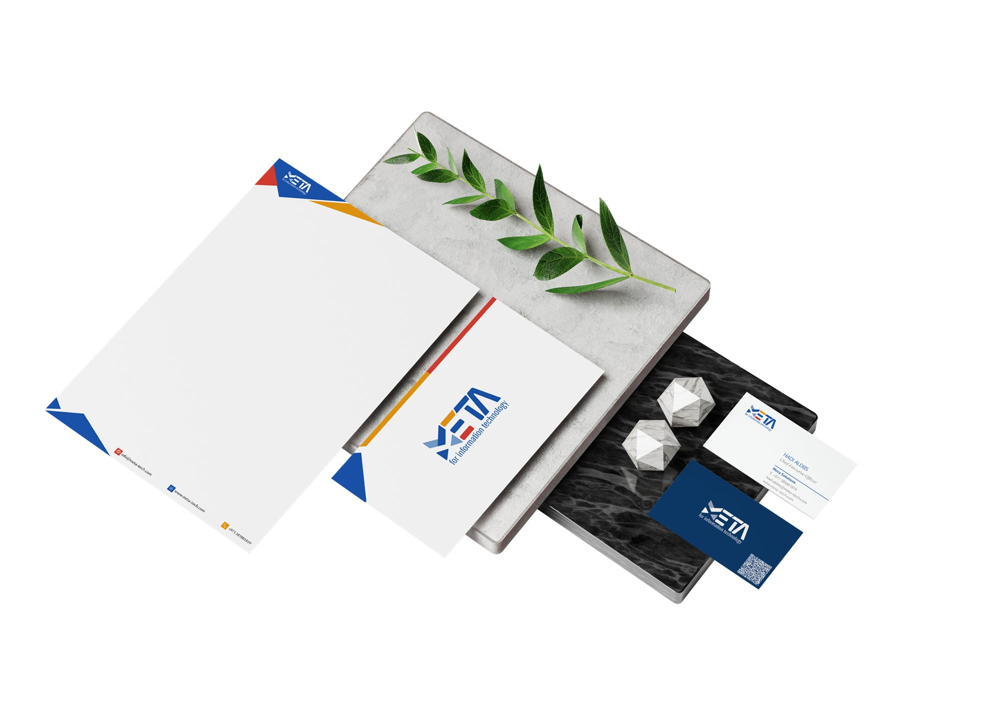
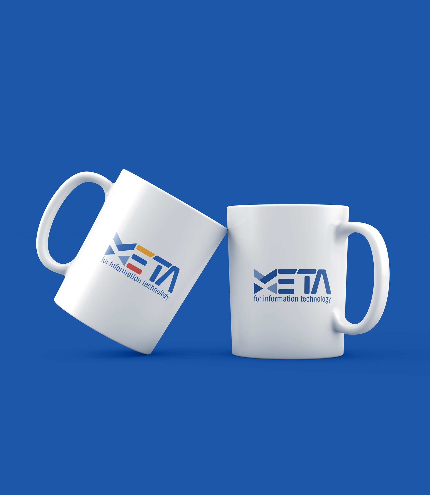
Next project